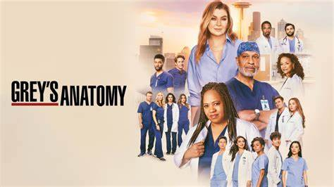
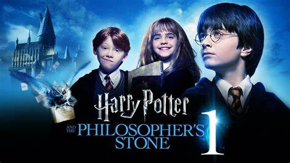

Quatro desajustados são transportados para um bizarro país das maravilhas cúbico onde impera a imaginação. Para voltar para casa, eles terão que dominar este mundo enquanto embarcam em uma missão com um experiente construtor imprevisível.
Grey's Anatomy é uma série de drama médico que estreou em março de 2005 e segue a vida de um grupo de cirurgiões estagiários no Seattle Grace Hospital. Ao longo de 19 temporadas, a série aborda temas como amor, amizade, e os desafios da medicina, enquanto os personagens enfrentam situações emocionais e éticas complexas.
Harry Potter e a Pedra Filosofal, lançado em 2001 e dirigido por Chris Columbus, é a primeira adaptação cinematográfica da famosa série de livros escrita por J.K. Rowling. O filme apresenta a jornada mágica do jovem Harry Potter, que descobre que é um bruxo e é convidado a estudar na Hogwarts School of Witchcraft and Wizardry.
Cobra Kai é uma série de TV de drama e ação de artes marciais, baseada na trilogia Karate Kid, criada por Robert Mark Kamen. A série estreou em 2 de maio de 2018 no YouTube Premium e acontece com a reabertura do dojo de karatê Cobra Kai, por Johnny Lawrence e a reativação da rivalidade com Daniel LaRusso.
Amor a Toda Prova é um filme que gira em torno de Cal Weaver (Steve Carell), um homem que, após ser traído por sua esposa, se vê obrigado a reavaliar sua vida amorosa e suas relações interpessoais. O enredo é uma mistura de humor e drama, abordando temas como amor, traição e redescoberta pessoal.
The Office é uma série de televisão americana que retrata a vida cotidiana dos funcionários de uma empresa americana de papelaria, através de uma mistura de comédia e drama. A série segue a vida dos funcionários da Dunder Mifflin, desde os altos e baixos de suas carreiras profissionais até as dinâmicas de suas vidas pessoais.